🎨 SAP Fiori Basics
Understand what SAP Fiori is, its 3 dimensions, 5 design principles, and how the SAP Fiori Launchpad works as your entry point.
What is SAP Fiori?
Lesson 2SAP Fiori is SAP's design language and UX approach — it covers Design, Principles, and Technology for consistent, role-based user experiences across all SAP products.
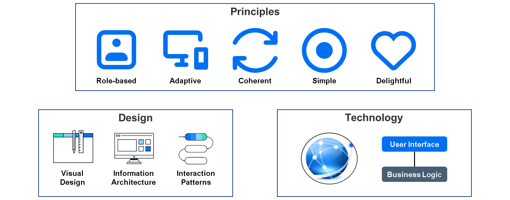
↑ The 3 Dimensions × 5 Principles framework
🏛️ 3 Dimensions
- Design — visual guidelines, Fiori Design System
- Principles — the 5 principles (below)
- Technology — SAPUI5, OData, Fiori Elements
⭐ 5 Design Principles
- Role-Based — tailored to the user's job
- Adaptive — works on any device
- Coherent — consistent look & feel
- Simple — only what's needed
- Delightful — pleasant to use
SAP Fiori Launchpad (FLP)
Lesson 2–3The FLP is the single entry point to all SAP Fiori apps. It runs on SAPUI5 and provides unified navigation, personalization, and search.
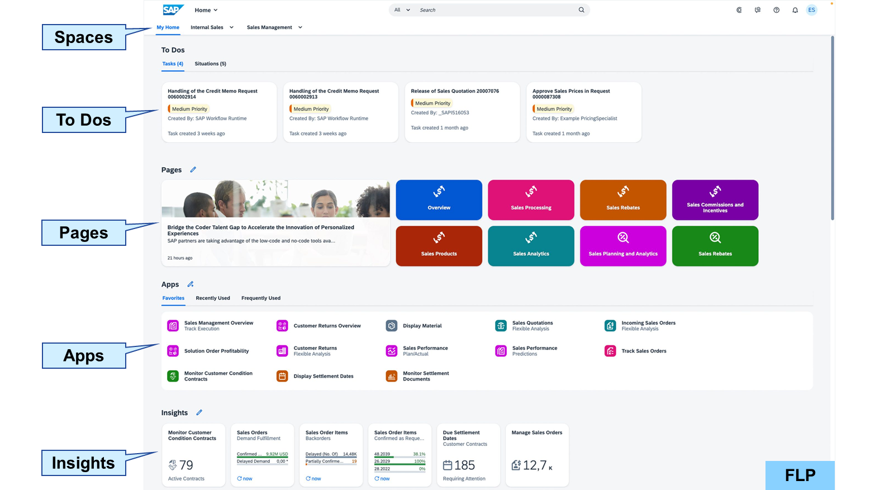
↑ My Home: the new default home page (Horizon theme)
📋 To-Dos
Actionable work items — tasks requiring your attention, pulled from workflows
📄 Pages
Structured views of tiles organized per business role and space
📱 Apps
Recently used and pinned applications accessible quickly
📊 Insights
KPI cards and analytical data relevant to your role
FLP Clients vs Integration Platforms
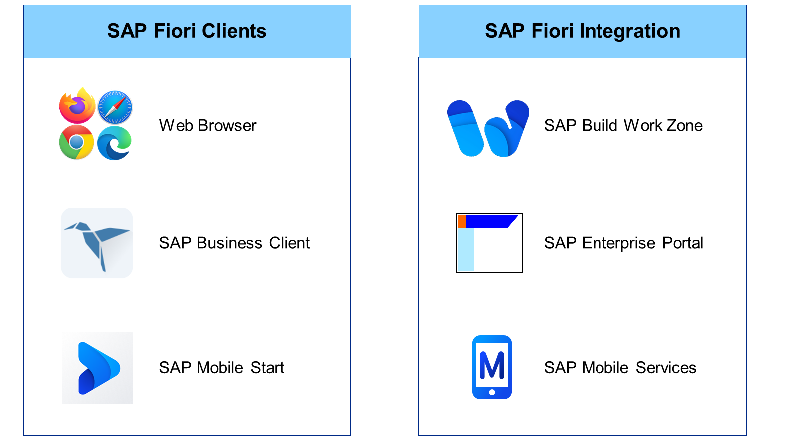
↑ 3 clients (left) vs 3 integration platforms (right)
| FLP Clients | |
|---|---|
| 🌐 | Web Browser |
| 💼 | SAP Business Client |
| 📱 | SAP Mobile Start |
| Integration Platforms | |
|---|---|
| 🏗️ | SAP Build Work Zone |
| 🌐 | SAP Enterprise Portal |
| 📡 | SAP Mobile Services |
FLP URL — Cache Buster
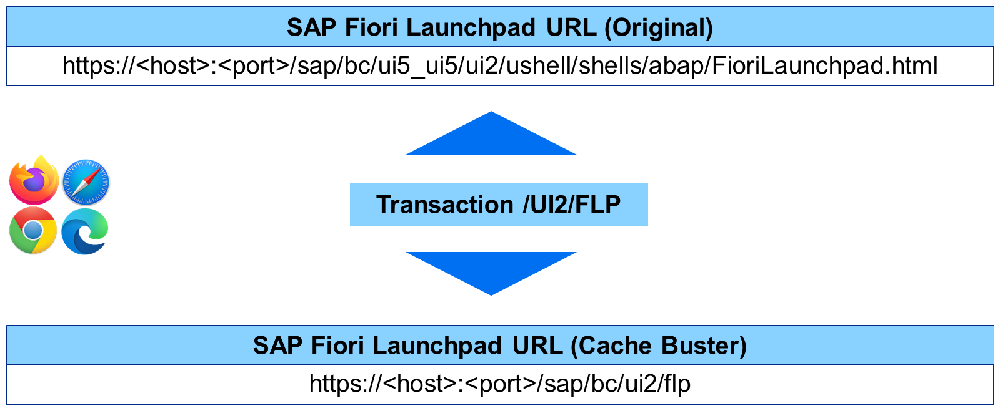
↑ Original URL vs Cache Buster URL vs ABAP Transaction
/sap/bc/ui2/flp in production — it ensures users always get the latest SAPUI5 resources. ABAP transaction: /UI2/FLPInteraction Pyramid & Object Page
Lesson 3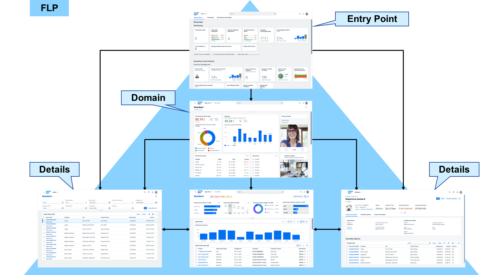
↑ Interaction Pyramid: FLP → Overview Page → Object Page
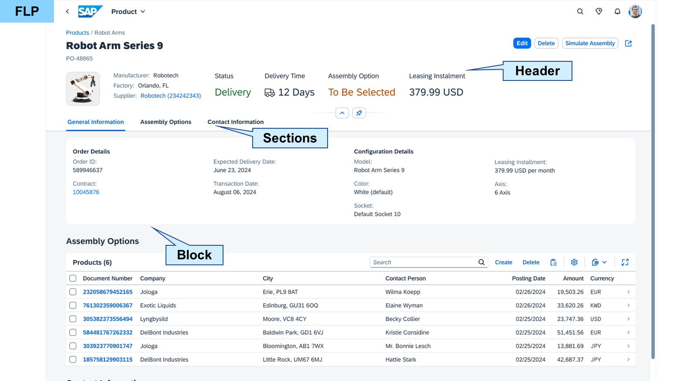
↑ Object Page anatomy: Header · Sections · Blocks
🧠 Unit 1 Quiz — Check Your Understanding
🎯 Unit 1 Key Takeaways
- SAP Fiori = Design + Principles + Technology (3 dimensions)
- 5 principles: Role-Based · Adaptive · Coherent · Simple · Delightful
- FLP is the single entry point — runs on SAPUI5
- Cache Buster URL:
/sap/bc/ui2/flp - My Home has 4 sections: To-Dos, Pages, Apps, Insights
- 3 FLP clients: Browser, SAP Business Client, Mobile Start
- Pyramid: FLP → Overview Page → Object Page
⚙️ Technology Stack
SAPUI5, MVC pattern, OData services, SAP Gateway, and the 3 SAP Fiori application types.
SAPUI5 — The UI Framework
Lesson 6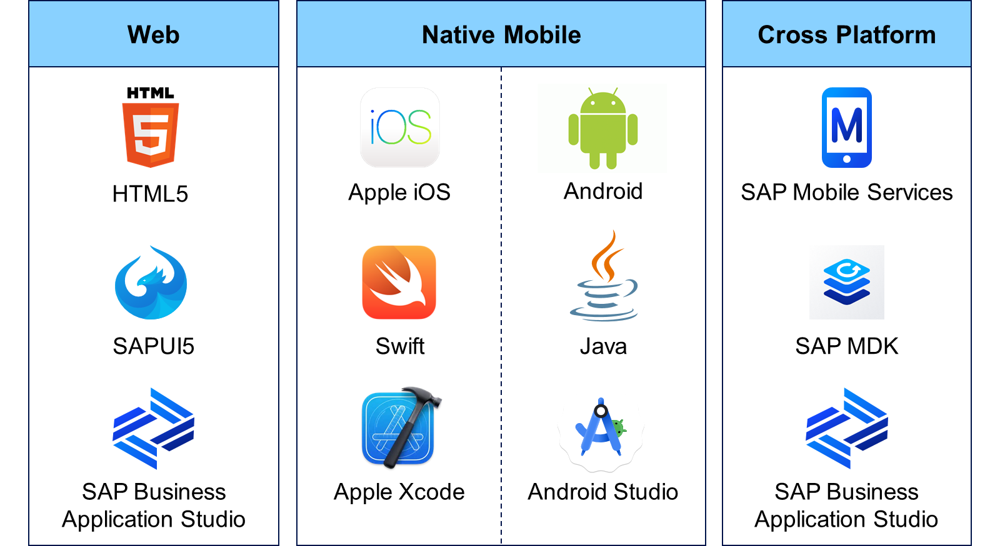
↑ Web vs Native vs Cross-Platform UI technologies
🔷 SAPUI5
SAP's HTML5 UI toolkit. Built on jQuery and OpenUI5. All SAP Fiori apps use it.
📦 OpenUI5
Open-source subset of SAPUI5, Apache 2.0 license. Same controls, fewer SAP-specific libraries.
💻 BSP
Business Server Pages — ABAP container that hosts SAPUI5 apps on the AS ABAP.
🛠️ Dev Tools
SAP Business Application Studio (BAS, cloud, Code OSS) or VS Code (local) with Fiori Tools.
MVC Architecture
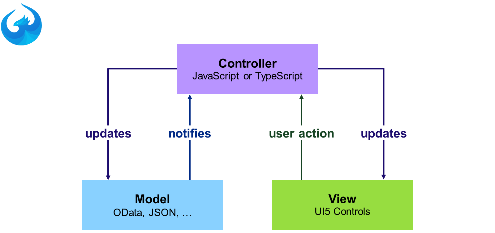
↑ Model–View–Controller in SAPUI5
Key SAPUI5 Libraries
| Library | Purpose |
|---|---|
sap.m | Responsive controls (buttons, lists, forms) |
sap.ui.comp | Smart controls with OData annotation binding |
sap.ui.core | Core framework — base classes, events |
sap.ui.layout | Layout containers |
sap.ui.table | Advanced grid tables |
OData — The Data Service Standard
Lesson 7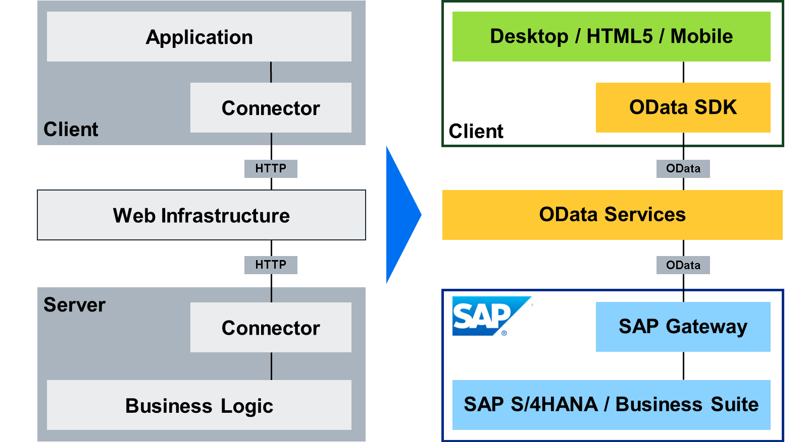
↑ Client → OData Services → SAP Gateway → S/4HANA backend
V2 → AS ABAP 7.00+ | V4 → AS ABAP 7.50+ (skip V3!)
CRUD HTTP Mapping
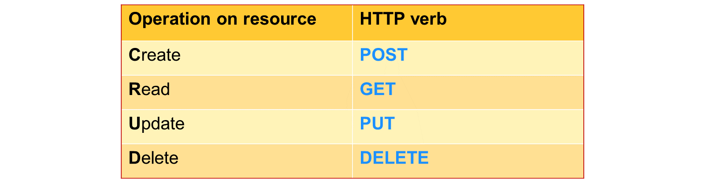
↑ CRUD operations and their HTTP verbs
| Operation | HTTP Verb | Description |
|---|---|---|
| Create | POST | Create a new entity |
| Read | GET | Retrieve entity/collection |
| Update | PUT | Replace entity |
| Delete | DELETE | Remove entity |
OData Query Options
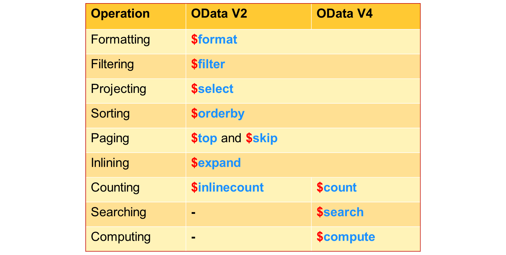
↑ V2 vs V4 query parameters comparison
$: $filter, $select, $orderby, $top, $skip, $expand, $count, $search (V4 only), $compute (V4 only). Use $metadata to get the service definition (EDM).SAP Fiori Application Types
Lesson 8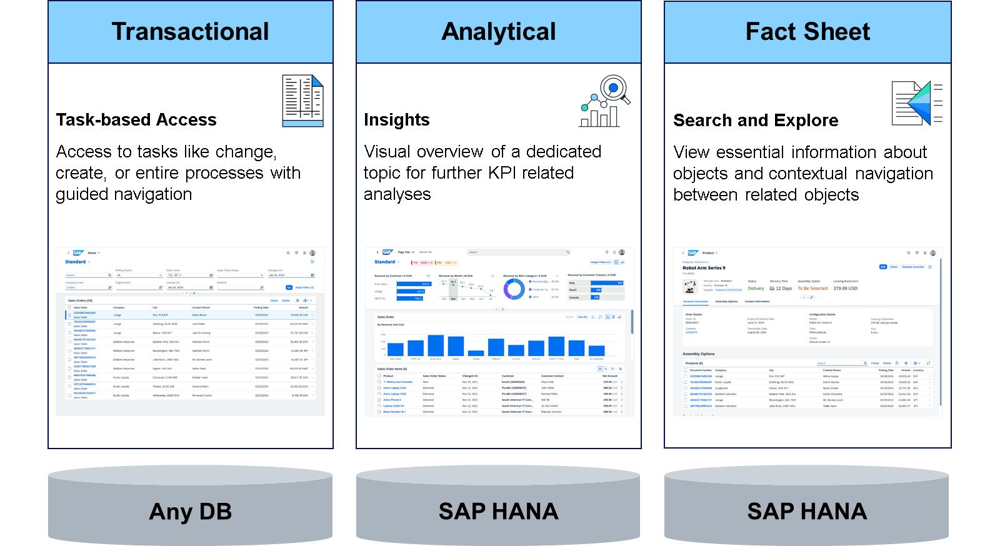
↑ 3 app types: Transactional, Analytical, Fact Sheet
| Type | DB Required | Technology | Example |
|---|---|---|---|
| Transactional | Any DB | SAP Fiori / SAPUI5 + Classic | Create Sales Order |
| Analytical | HANA only | Fiori Elements + BW Query | Revenue KPIs |
| Fact Sheet | HANA only | Object Page + CDS Search | Customer Fact Sheet |
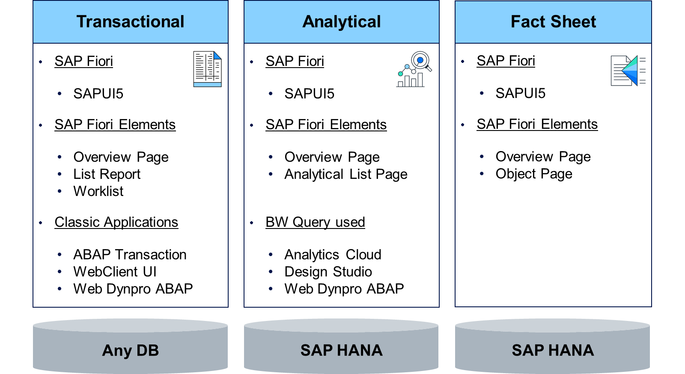
↑ Detailed breakdown: subtypes and floorplans per app type
SAP Gateway Deployment Options
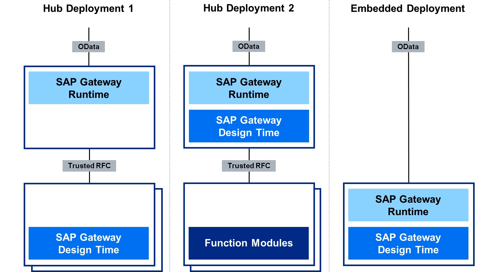
↑ Hub Option 1, Hub Option 2, Embedded deployment
| Deployment | Use Case | Gateway Location |
|---|---|---|
| Hub Option 1 | SAP Business Suite, dev on BES | FES calls BES via RFC |
| Hub Option 2 | Multiple BES, dev on FES | FES hosts Gateway |
| Embedded | SAP S/4HANA (recommended) | Inside BES itself |
🧠 Unit 2 Quiz
🎯 Unit 2 Key Takeaways
- SAPUI5 = SAP's HTML5 toolkit. OpenUI5 = open-source subset (Apache 2.0)
- MVC: Model=OData/JSON · View=XML Controls · Controller=JS/TS
- OData: REST-based, V2 (7.00+), V4 (7.50+), V3 was SKIPPED
- All query params prefixed with
$— $filter, $select, $top, $skip, $expand - 3 app types: Transactional (any DB) · Analytical (HANA) · Fact Sheet (HANA)
- SAP Gateway: Hub Option 1, Hub Option 2, Embedded (recommended for S/4HANA)
🏗️ Architecture & S/4HANA
FES/BES landscape, deployment models, SAP S/4HANA evolution, Embedded Analytics, Enterprise Search, and ABAP programming models.
FES / BES Landscape
Lesson 10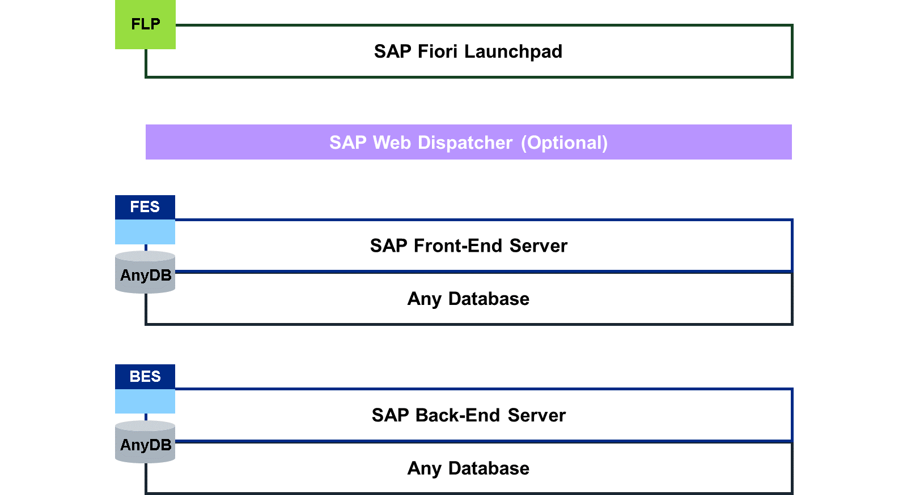
↑ FLP → Web Dispatcher (optional) → FES (Any DB) → BES (Any DB)
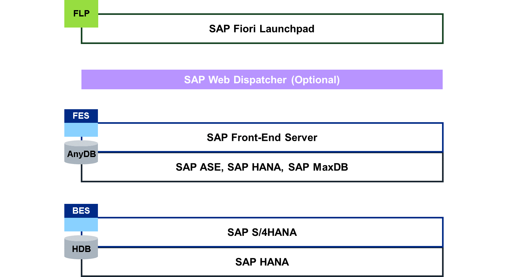
↑ S/4HANA specific: BES must run on SAP HANA (HDB)
AS ABAP 7.40+. Hosts SAPUI5, FLP, Gateway proxy. Any database (ASE, HANA, MaxDB).
SAP Business Suite or S/4HANA. S/4HANA must use SAP HANA as DB.
Embedded vs Hub Deployment
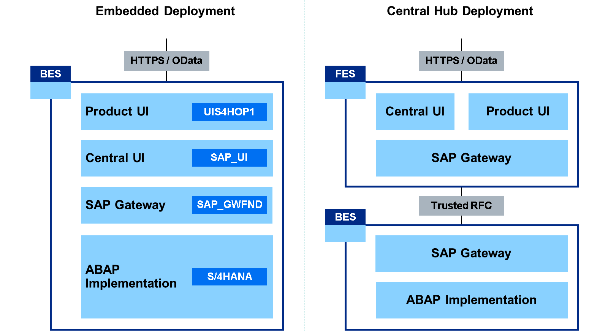
↑ Software components across deployment topologies
| Factor | Embedded (S/4HANA) | Hub (Business Suite) |
|---|---|---|
| FES location | Inside BES server | Separate FES server |
| Recommended for | SAP S/4HANA ✅ | SAP Business Suite ✅ |
| SAP_UI (SAPUI5) | On BES | On FES |
| SAP_GWFND | On BES | On FES |
| UIS4HOP1 | On BES | On BES |
Gateway Transactions Cheatsheet
| Transaction | Purpose |
|---|---|
SEGW | Service Builder — build OData services (code-based) |
/IWFND/MAINT_SERVICE | Register/activate OData V2 services on FES |
/IWFND/V4_ADMIN | Publish OData V4 services |
/IWBEP/V4_ADMIN | Create V4 service groups |
/IWFND/GW_CLIENT | Test OData services (like built-in Postman) |
Full App Flow — All Types
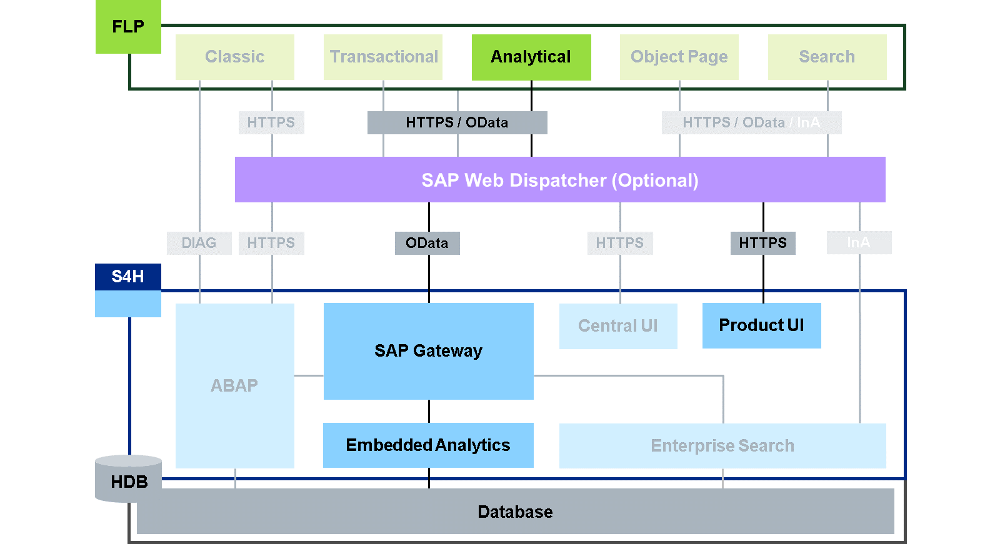
↑ Analytical apps highlighted — OData → Gateway → Embedded Analytics → HANA
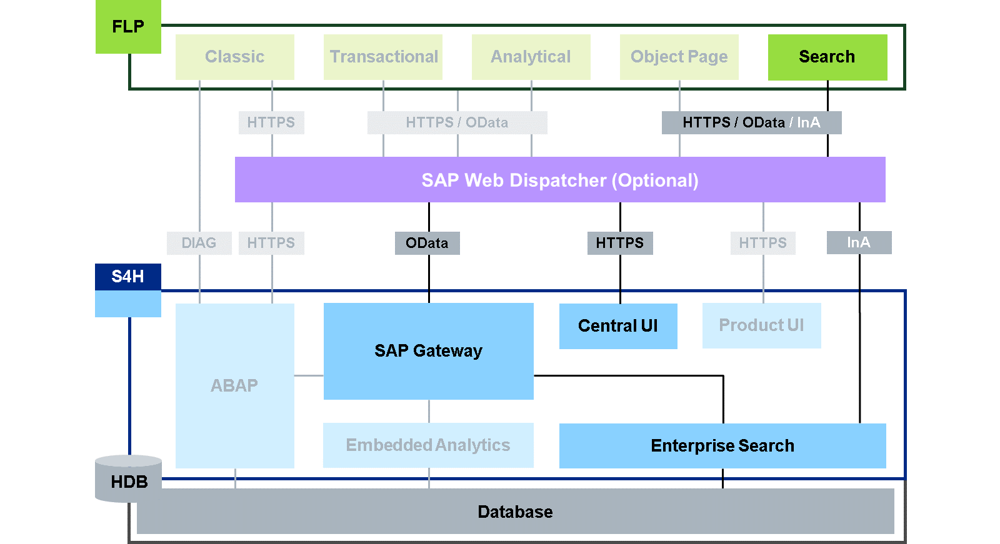
↑ Search/Fact Sheet — HTTPS/OData/InA → Enterprise Search → HANA
SAP S/4HANA — Evolution & Reimaginations
Lesson 11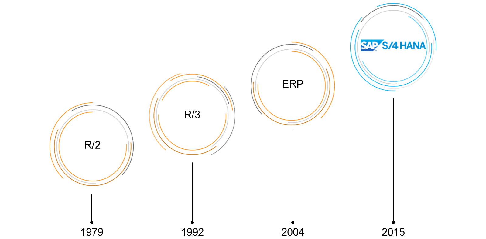
↑ SAP R/2 (1979) → R/3 (1992) → ERP (2004) → S/4HANA (2015)
SAP R/2 — 1979
Mainframe-based ERP. First SAP product.
SAP R/3 — 1992
Client-server architecture. GUI-based. Revolutionary for its time.
SAP ERP (ECC) — 2004
SOA-based. Web Dynpro introduced. Foundation for modern SAP.
SAP S/4HANA — 2015
In-memory. SAP Fiori UX. S = Suite, 4 = 4th generation. HANA database mandatory.
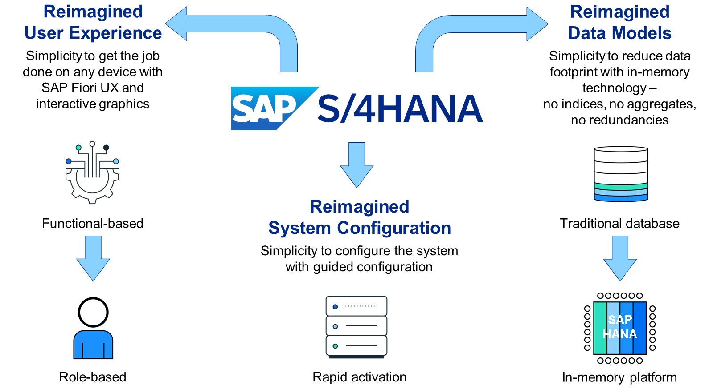
↑ S/4HANA's 3 reimaginations
🎨 User Experience
SAP Fiori UX replaces all GUI transactions. Role-based, beautiful, consistent.
📊 Data Models
Simplified schema. In-memory storage on HANA. No aggregates. Reduced footprint.
⚡ System Configuration
Rapid activation replaces lengthy implementation projects. Task list-driven.
Embedded Analytics & Enterprise Search
ABAP CDS Views + SAP Smart Business → KPI tiles and reports. Manage with app F2814 (Manage KPIs and Reports). Uses InA protocol internally.
Powers FLP global search + Fact Sheets. Uses InA protocol or
ESH_SEARCH_SRV OData. Fact Sheets use CDS-based ES connectors.ABAP Programming Models & Fiori Elements
Lesson 12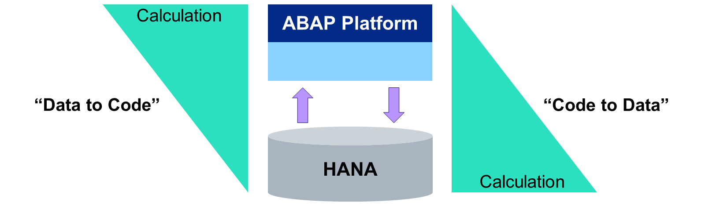
↑ Old: "Data to Code" (bring DB data to ABAP) → New: "Code to Data" (push logic to HANA)
4 ABAP Programming Models (Evolution)
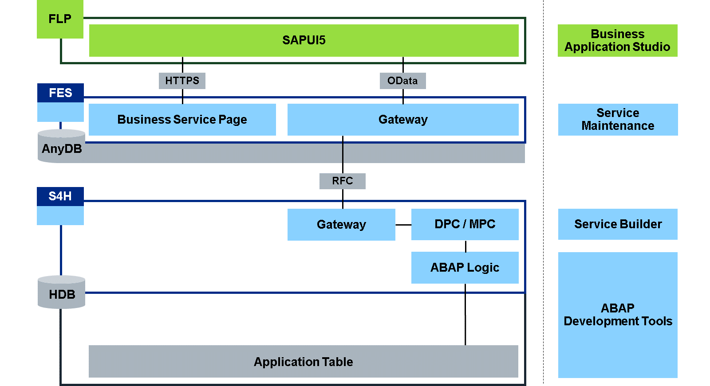
Write ABAP functions/RFCs/BAPIs manually. Use SEGW to build OData service. Generated classes: DPC (Data Provider Class) + MPC (Model Provider Class). You fill DPC with custom ABAP logic.
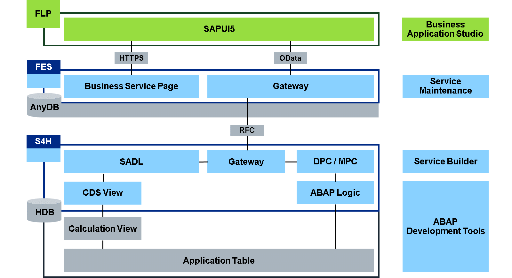
SADL (Service Adaptation Definition Language) auto-generates OData services from CDS Views — no manual DPC coding for reads. CDS Views deployed as HANA database views. Calculation Views can sit below for analytics.
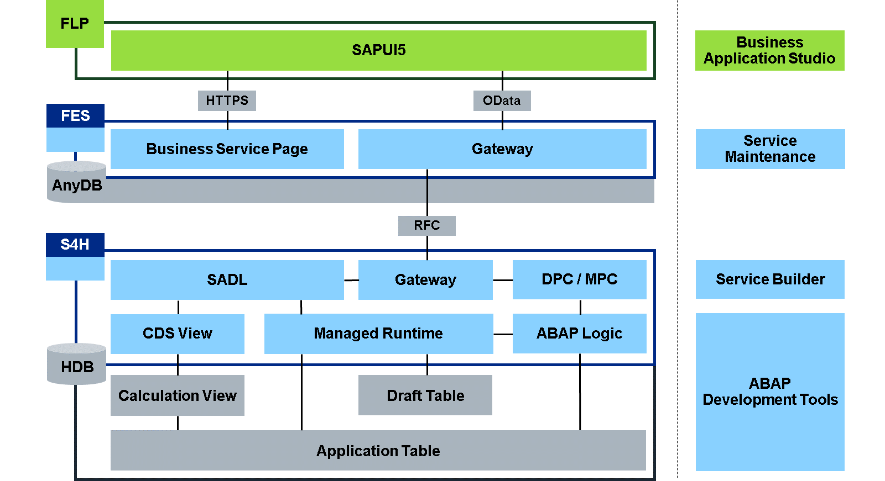
RAP (ABAP RESTful Application Programming) — ABAP Platform 7.54+. Adds Managed Runtime (handles lock/draft/activate automatically) and Draft Table in HANA for save-without-commit. RAP is the future of SAP Fiori development.
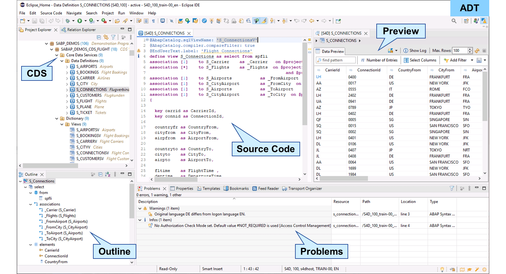
↑ ABAP Development Tools (ADT) in Eclipse — CDS Editor, Preview, Outline panels
SAP Fiori Elements Floorplans
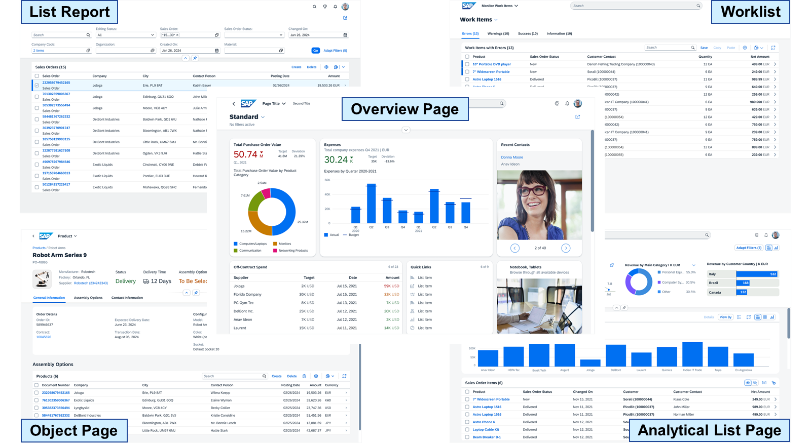
↑ List Report · Object Page · Overview Page · Analytical List Page · Worklist
List Report
Browse and filter a list; navigate to Object Page
Object Page
Display/edit one specific object with details
Overview Page
Domain overview with multiple card types (KPI, list, chart)
Analytical List Page
Filter + chart + table for analytical data
Worklist
Simplified task list — no complex filter bar
🧠 Unit 3 Quiz
🎯 Unit 3 Key Takeaways
- FES = Any DB | BES (S/4HANA) = HANA mandatory
- Embedded deployment for S/4HANA | Hub for Business Suite
- S/4HANA 3 reimaginations: UX + Data Models + System Config
- Embedded Analytics = CDS Views + Smart Business (KPI tiles, app F2814)
- Enterprise Search uses InA protocol; Fact Sheets = CDS-based ES connectors
- 4 ABAP models: Code-Based → CDS+SADL → BOPF → RAP (future)
- "Code to Data" paradigm — push logic into HANA with CDS Views & AMDPs
- 5 Fiori Elements floorplans — metadata-driven, no manual UI coding
📂 Content Management
Manage SAP Fiori content: 3 configuration layers, catalogs, spaces, pages, and the tools used to manage them.
3-Layer Configuration Model
Lesson 14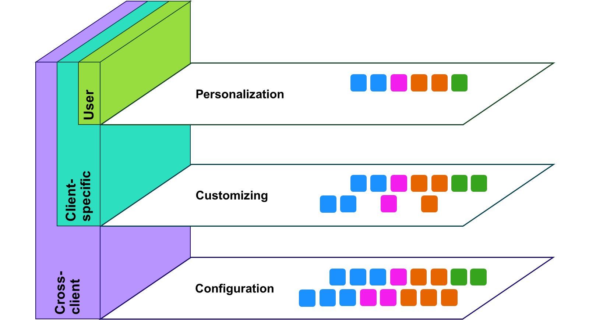
↑ Configuration → Customizing → Personalization
Configuration (Cross-Client)
Base settings valid for all clients. Delivered by SAP. Foundation layer.
Customizing (Client-Specific)
Fine-tunes configuration per client. Basis/admin team manages this.
Personalization (End User)
Each user personalizes within what's been made available by customizing.
Content Management Tools
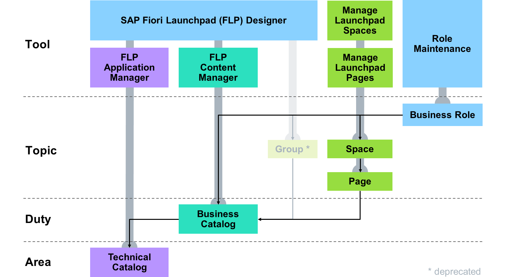
↑ Tools for Configuration, Customizing, and Personalization layers
Role Maintenance
PFCGABAP transaction for business roles. Assign catalogs, spaces, groups.
FLP Designer
FLPDSAPUI5 app. Groups, technical and business catalogs. Since SAP_UI 7.40.
FLP Content Mgr
FLPCMABAP transaction for business catalogs. Since SAP_UI 7.53.
FLP App Manager
FLPAMWeb Dynpro for technical catalogs. Since SAP_UI 7.55.
Manage Spaces
FLP AppSAPUI5 app for spaces. Since SAP_UI 7.55.
Manage Pages
FLP AppSAPUI5 app for pages. Since SAP_UI 7.55.
Spaces, Pages & Best Practices
Lesson 15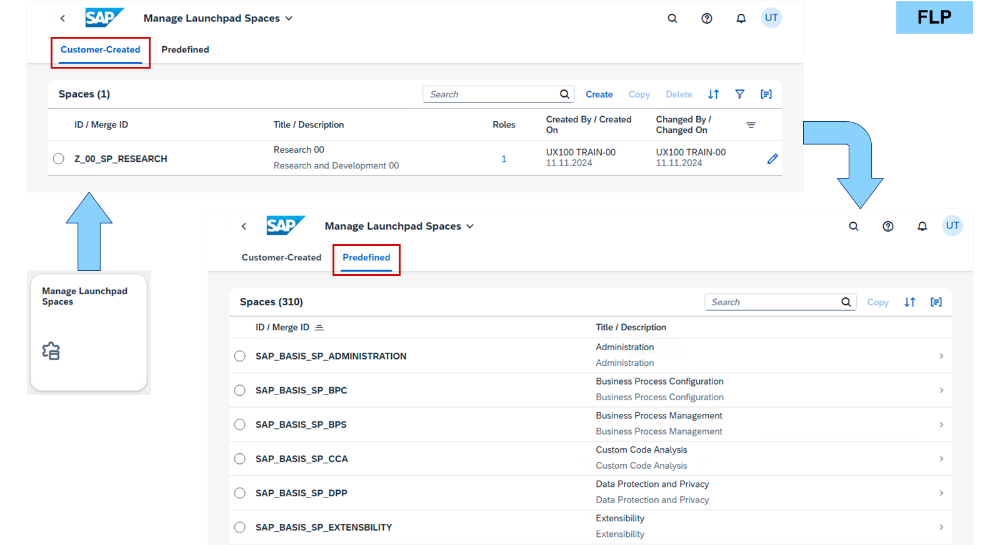
↑ Manage Launchpad Spaces — predefined and customer spaces
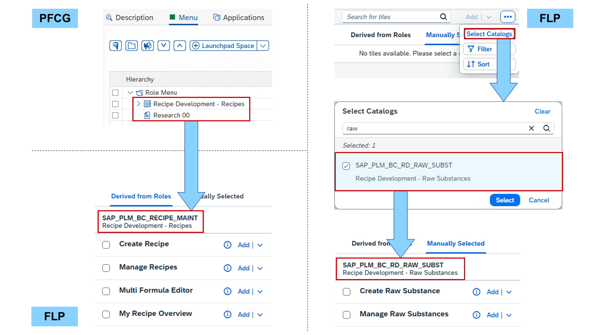
↑ Manage Launchpad Pages — derived from roles vs manually selected catalogs
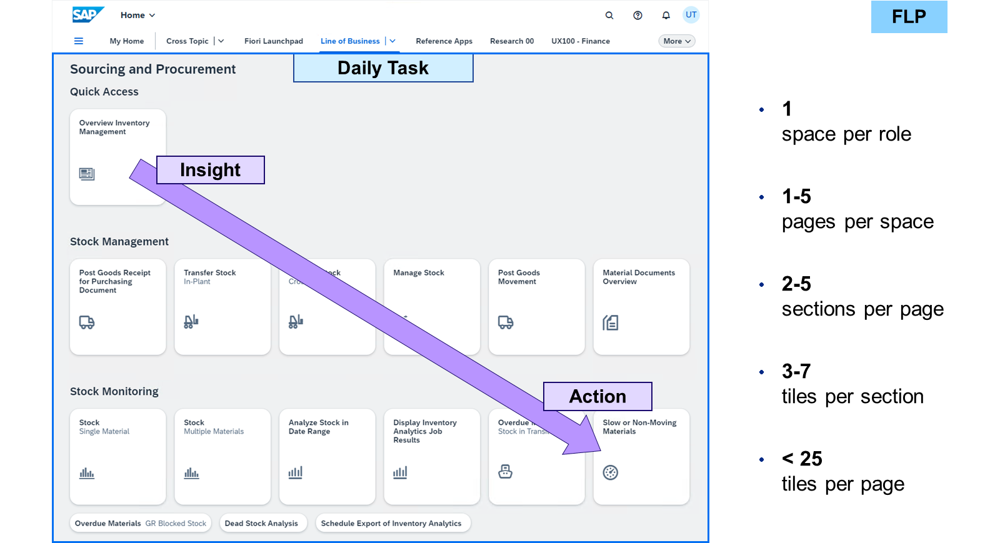
↑ Best Practices — Insight to Action layout guideline
| Level | Best Practice |
|---|---|
| Role → Space | 1 space per business role (same topic) |
| Space → Pages | 1–5 pages per space (one business task per page) |
| Page → Sections | 2–5 sections, ordered insight → action (top-left → bottom-right) |
| Section → Tiles | 3–7 tiles per section, logically ordered |
| Page Total | Max 25 tiles per page |
Z or Y and contain SP (e.g. Z_##_SP_RESEARCH). Customer catalog IDs must also start with Z/Y.Catalog Content Model
Lessons 17–22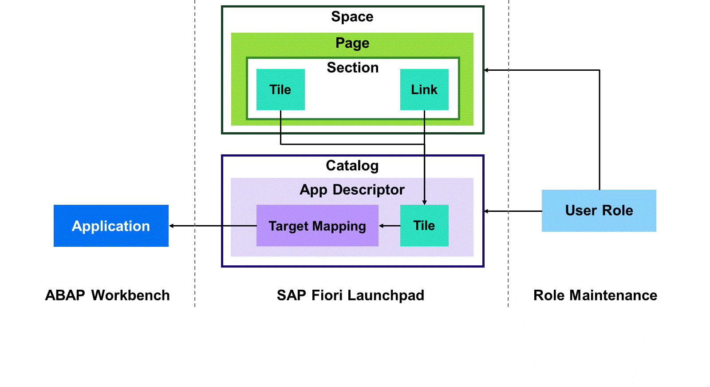
↑ Content model: App Descriptor → Tile + Target Mapping → Catalog → Role
| Element | Short | Naming Schema | Description |
|---|---|---|---|
| Business Role | BR | SAP_BR_<role> | Role for a business topic |
| Space | SP | SAP_<area>_SP_<topic> | Tiles for topic |
| Page | PG | SAP_<area>_PG_<task> | Tiles for daily task |
| Business Catalog | BC | SAP_<area>_BC_<duty> | Tiles for duty |
| Standard Catalog | TC | SAP_TC_<area>_<sub>_COMMON | App descriptors for area |
| Back-End Catalog | TC | SAP_TC_<area>_<sub>_BE_APPS | App descriptors for BE apps |
Configuration Parameters for Spaces
| Parameter | Effect | Default |
|---|---|---|
SPACES | Enable spaces and pages | false |
SPACES_ENABLE_USER | Let users switch spaces ↔ classic home | false |
SPACES_MYHOME | Enable My Home | true |
SPACES_SORT_CRITERION | Sort spaces by title or ID | title |
SPACES_NAVIGATION_BAR_PERSONALIZATION | Allow nav bar personalization | — |
🧠 Unit 4 Quiz
🎯 Unit 4 Key Takeaways
- 3 layers: Configuration → Customizing → Personalization
- 6 tools: PFCG · FLPD · FLPCM · FLPAM · Manage Spaces · Manage Pages
- Best practice: 1 role → 1 space → 1–5 pages → 2–5 sections → 3–7 tiles → max 25/page
- Catalog naming: BR · SP · PG · BC · TC (Standard) · TC (Back-End)
- Customer IDs must start with Z or Y
- Copying catalogs creates references (not copies) — SAP updates propagate
🔄 Content Migration
Migrate legacy SAP Fiori catalog content (non-typed technical catalogs) to the new content model.
Migrating Non-Typed Technical Catalogs
Lessons 24–25Migration Path
🗂️ Old: Non-Typed TC
Technical catalog with tiles + target mappings mixed together. No clear Business/Standard split.
✅ New: Typed Catalog
Standard Catalog (TC) holds app descriptors. Business Catalog (BC) references tiles for users.
Migration Steps
Identify Non-Typed Catalogs
Use FLPAM to find catalogs that don't have a Standard or Replicable type assigned.
Assign Catalog Type
In FLPAM, select the catalog and assign the correct type (Standard Catalog or Replicable Catalog).
Create Business Catalogs
Copy from the now-typed technical catalog into a BC using FLPCM. References auto-update.
Assign BCs to Roles
In PFCG, replace old TC references with the new BC references in business roles.
🧠 Unit 5 Quiz
🎯 Unit 5 Key Takeaways
- Non-typed TCs are legacy — need migration to typed (Standard/Replicable) TCs
- Migration path: Identify → Assign Type (FLPAM) → Create BC references (FLPCM) → Assign to roles (PFCG)
- Enable catalog types in FLPAM settings first
🛡️ Content Administration
Rapid Activation, predefined roles, enrolling users, and configuring the FLP using task lists.
Rapid Activation for SAP Fiori
Lesson 27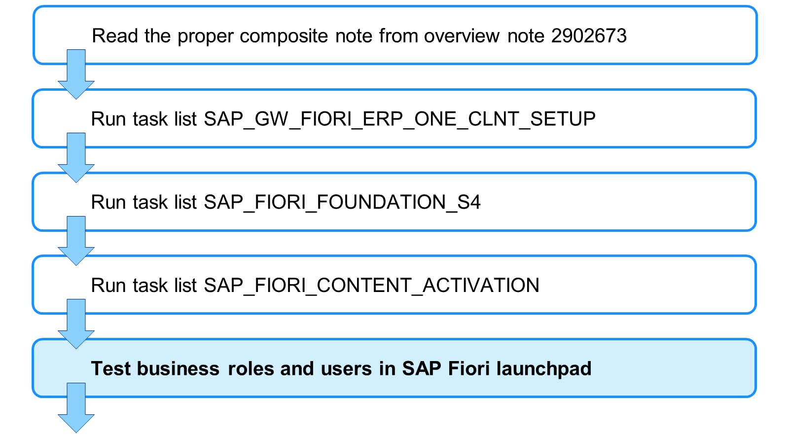
↑ SAP Note 2902673 → Task Lists → Test in FLP
Key Task Lists
| Task List | Purpose |
|---|---|
SAP_GW_FIORI_ERP_ONE_CLNT_SETUP | Technical setup: Gateway + SAPUI5 + FLP in one client |
SAP_FIORI_FOUNDATION_S4 | Initial FLP + app setup for S/4HANA |
SAP_FIORI_CONTENT_ACTIVATION | Activate SAP-delivered business roles |
SAP_FIORI_FCM_CONTENT_ACTIVATION | Activate customer-created business roles |
SAP_FIORI_FCM_CATALOG_ACTIVATION | Activate content of business catalogs (since 2023 FPS01) |
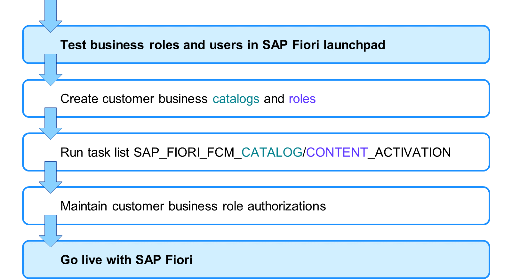
↑ Customer content activation flow (after SAP content is activated)
Predefined Roles & User Enrollment
Lesson 28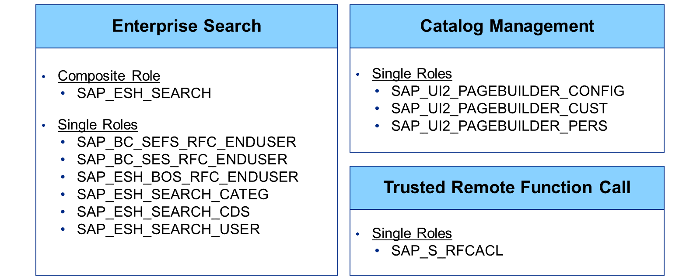
↑ Additional roles: Enterprise Search · Catalog Management · Trusted RFC
🔐 SAP_FLP_ADMIN
Single admin role (since SAP_UI 7.55). Includes all FLP management tools. Replaces SAP_UI2_ADMIN composite role.
🏛️ Foundation User Role
Z_FIORI_FOUNDATION_USER composite role — must be assigned for FLP catalog loading to work.
🔑 Rapid Activation Role
SAP_BR_UX100_RAPID_ACTIVATION — used during setup to test the FLP before full configuration.
⚠️ Authorization Specialists
SAP strongly recommends involving authorization specialists for S/4HANA auth concept (ADM945).
🧠 Unit 6 Quiz
🎯 Unit 6 Key Takeaways
- Rapid Activation starts from SAP Note 2902673
- STC01 = run task lists | STC02 = monitor runs
- 3 main task lists: ONE_CLNT_SETUP → FOUNDATION_S4 → CONTENT_ACTIVATION
- SAP_FLP_ADMIN single role replaces SAP_UI2_ADMIN composite role
- Missing Z_FIORI_FOUNDATION_USER → "Failed to load catalogs" error
- Always activate role by role, not everything at once
🎨 Adaptation
UI Theme Designer, Runtime Adaptation (RTA), app variants, and FLP plug-ins for extending the launchpad.
UI Theme Designer
Lesson 32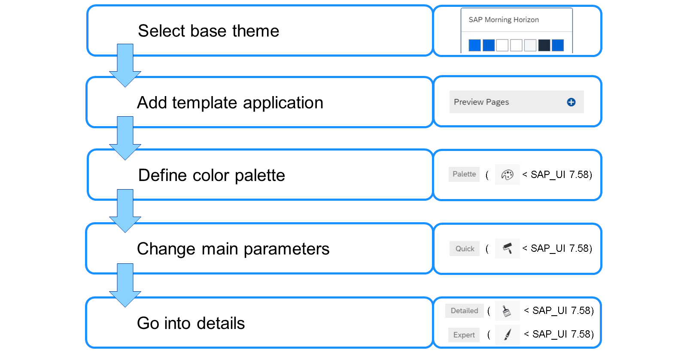
↑ 5 steps: Select base theme → Template app → Color palette → Main params → Details
/UI5/THEME_DESIGNER | SAP BTP → FLP User Menu → Theme Manager → Launch Theme DesignerSAP Fiori Themes
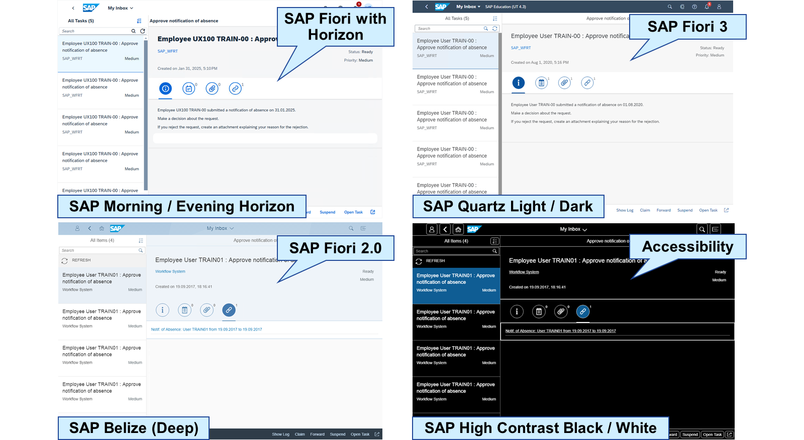
↑ Horizon · Fiori 3 Quartz · Fiori 2.0 Belize · High Contrast Black/White
| Theme | Parameter Value | Release |
|---|---|---|
| SAP Morning Horizon | sap_horizon | S/4HANA Cloud 2202 / UI5 1.102 |
| SAP Evening Horizon | sap_horizon_dark | S/4HANA Cloud 2202 / UI5 1.102 |
| SAP Quartz Light | sap_fiori_3 | S/4HANA Cloud 1904 / UI5 1.65 |
| SAP Quartz Dark | sap_fiori_3_dark | S/4HANA Cloud 2002 / UI5 1.72 |
| SAP Belize | sap_belize | SAP_UI 7.51 / UI5 1.44 |
| HC Black (Horizon) | sap_horizon_hcb | Accessibility |
| HC White (Horizon) | sap_horizon_hcw | Accessibility |
sap_horizon. Use /UI5/THEME_TOOL to manage themes in the theme repository (view, import, export, delete, transport).Theme Config Parameters
| Parameter | Purpose | Default |
|---|---|---|
DARK_MODE | Allow users to enable dark mode | true |
THEMING_DEFAULT_THEME | Default theme for all users | sap_horizon |
THEMING_HIDE_SAP_THEMES | Remove SAP themes from Settings | false |
USERSETTINGS_SET_THEME | Allow users to change theme | true |
Runtime Adaptation (RTA) & App Variants
Lesson 33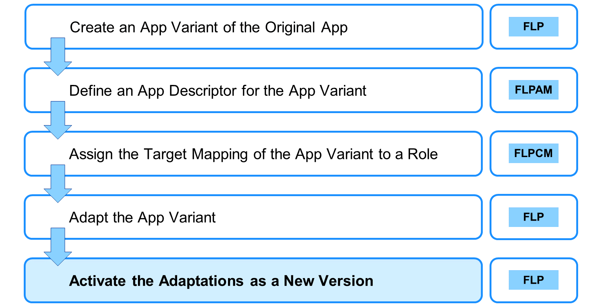
↑ App variant workflow (since S/4HANA 2023): FLP → FLPAM → FLPCM → FLP adapt → Activate
App Variant Creation Flow (S/4HANA 2023+)
FLP: Create App Variant
Start original app → User Menu → Adapt UI → More Actions → App Variants → Save As. Copy the App Variant ID.
FLPAM: Define App Descriptor
Copy original app descriptor to a Standard Catalog. Replace SAPUI5 Component ID with the App Variant ID.
FLPCM: Assign to Role
Reference the target mapping in a Business Catalog. Assign BC to role.
FLP: Adapt the Variant
Start the app variant → Adapt UI → Make changes (rename groups, add/remove fields).
FLP: Activate & Publish
Activate as new version → Publish to transport request (customizing = client-specific, workbench = cross-client).
FLP Plug-Ins
Lesson 34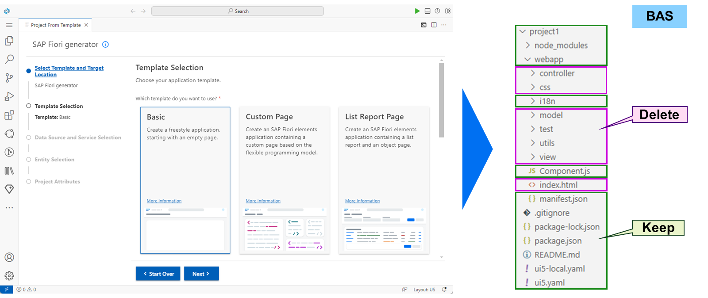
↑ Generate a freestyle SAPUI5 app in BAS, then configure as FLP plug-in
📦 Implement Plugin
Generate SAPUI5 freestyle app in BAS. Set "type":"plugin" in sap.flp section of manifest.json.
⚙️ Activate Plugin
Define in /UI2/FLP_CONF_DEF (Define Launchpad Plug-Ins). Then activate via customizing/FLPCM.
Plugin manifest.json — key snippet:
{
"sap.flp": {
"type": "plugin"
}
}Plugin Component.js — renderer access pattern:
// Get FLP renderer to modify shell
rendererPromise.then(function(oRenderer) {
oRenderer.setHeaderTitle("My Company");
});/UI2/FLP_CONF_DEF before it can be activated. See SAP Note 3085381 for the full guide.🧠 Unit 7 Quiz
🎯 Unit 7 Key Takeaways
- UI Theme Designer: browser-based, transaction /UI5/THEME_DESIGNER
- Default theme: SAP Morning Horizon (
sap_horizon) - App variant flow (2023+): FLP → FLPAM → FLPCM → FLP adapt → Activate version
- Key user role: SAP_UI_FLEX_KEY_USER
- FLP Plugins defined in /UI2/FLP_CONF_DEF, type="plugin" in manifest.json
- Plugins load asynchronously — no guaranteed order